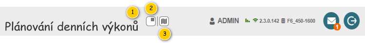
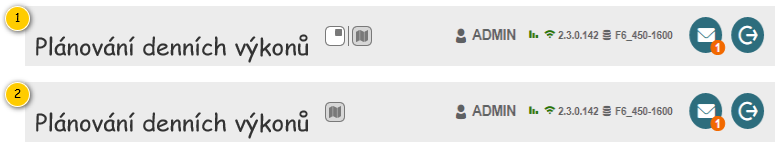

Hlavička slouží především k identifikaci právě zobrazené obrazovky, vychází pak z jejího obecného popisu – viz 700UI03: Hlavička aplikace. Navíc je doplněna o tlačítka umožňující nastavení rozložení obrazovky.
Poznámka pro vývoj: V rámci dokumentu je zaneseno stávající chování. Provedené změny v rámci M10 jsou naznačeny modře.

| Callout | Komponenta | Nadpis | Typ komponenty | Příklad hodnoty | Hodnota | Výchozí hodnota | Formát | Zpřístupněná | Viditelná | Chování | Validace | Poznámka |
|---|---|---|---|---|---|---|---|---|---|---|---|---|
| 1 | Nadpis | – | Label | – | Pevně daný text:
| – | – | Vždy | Vždy | – | – | – |
| 2 | Skrytí panelu s mapami | – | ToggleButton
| – | – | – | – | Vždy | Pokud je spuštěn režim zobrazení mapy v samostatném okně:
Jinak:
| Stisknutí tlačítka provede skrytí/zobrazení panelu. Pokud je tlačítko stisknuto, je panel zobrazen, jinak je panel skryt.
| – | V rámci bublinkové nápovědy je zobrazován pevně daný text:
|
| 3 | Zobrazení mapy v samostatném okně | – | ToggleButton
| – | – | – | – | Vždy | Vždy | Stisknutí tlačítka provede zapnutí/vypnutí režimu zobrazení mapy v samostatném okně. Pokud je tlačítko stisknuto, je režim spuštěn, jinak režim spuštěn není.
Stisknutí tlačítka při vypnutém režimu – spustí 202UC03: Zobrazit mapu při plánování denních výkonů v samostatném okně, na vstup UC jsou předány následující hodnoty:
Stisknutí tlačítka při spuštěném režimu – spustí 202UC04: Zrušit zobrazení mapy při plánování denních výkonů v samostatném okně, na vstup UC jsou předány následující hodnoty:
| – | V rámci bublinkové nápovědy je zobrazován pevně daný text:
Před tlačítkem je umístěn oddělovač, pokud není tlačítko umístěno jako první v pořadí. |
V rámci režimu zobrazení mapy v samostatném okně jsou pro jeden modul otevřeny 2 záložky prohlížeče – v každé je pak hlavička přizpůsobena konkrétnímu obsahu obrazovky:
